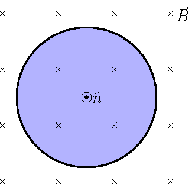
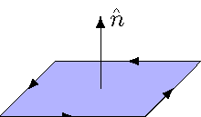
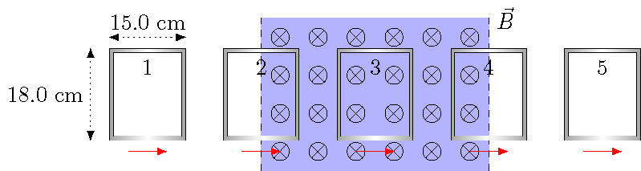

28. Faraday’s law¶
28.1. Overview¶
Here are the objectives for this lesson:
28.2. Magnetic flux¶
28.2.1. Definition of magnetic flux¶
The intuitive idea behind magnetic flux is essentially the same as that for electric flux: we are now counting the number of magnetic field lines that pass through a surface. Thus, again, we want to know how much of the field is perpendicular to the surface, and therefore the field that is parallel to the surface’s normal vector \({\hat n}\). This gives a definition of magnetic flux \({\Phi_B}\) that looks a lot like that for electric flux.
Quantity: magnetic flux
Definition: For a magnetic field \({\vec B}\) passing through a surface with an area vector \({\vec A}\), the magnetic flux is given by
Units: webers (Wb) = T \(\cdot \)m\(^2\)
Problem
The magnetic field through the circular area (\(r = 13.0\) cm) shown below points into the page and has an initial value of 150 mT. This field decreases in magnitude at a rate of 17.0 mT/s. The normal vector is chosen to point out of the page. Based on the information given, what is the magnetic flux (in mWb) through the circle? Be sure to include the appropriate sign.

Answer: \(-7.96\) mWb
28.2.2. Change in magnetic flux¶
What will be important for Faraday’s law is not so much the magnetic flux, but instead the change in magnetic flux with time. Thinking in terms of the vectors associated with \(\Phi_B\), this can happen for two basic reasons. If the magnetic field vector is changing, then the change in magnetic flux with time is given by
On the other hand, the magnetic flux can vary if the area vector is changing as well; in this case,
Of course, there is also the possibility that both vectors are changing with time! In addition, the angle between the vectors is changing, but this can only happen if one or both vectors vary with time.
Problem
The magnetic field through the circular area (\(r = 13.0\) cm) shown below points into the page and has an initial value of 150 mT. This field decreases in magnitude at a rate of 17.0 mT/s. The normal vector is chosen to point out of the page. Based on the information given, what is the rate of change in the magnetic flux (in \(\mu\)Wb/s) through the circle? Be sure to include the appropriate sign.
Answer: \(+902 \ \mu\)Wb/s
28.2.3. Direction along area boundaries¶
The last mathematical step we need to complete is to set a direction along the boundary of a surface. This will be done in relation to the direction of the area vector. Thus, if you know one, you will be able to find the other. Let’s see how this works.
Choose a direction for the normal vector \({\hat n}\) perpendicular to the surface.
Pointing your right thumb in the direction of \({\hat n}\), your right-hand fingers will curl around the boundary loop. This gives the positive direction along the boundary.
This is the “right-hand rule” for relating the direction of the area vector and the direction around the boundary loop.
The resulting relationship between the area vector \({\vec A}\) and the positive direction along the boundary is shown in the picture below.

Problem
The magnetic field through the circular area (\(r = 13.0\) cm) shown below points into the page and has an initial value of 150 mT. This field decreases in magnitude at a rate of 17.0 mT/s. The normal vector is chosen to point out of the page. Based on the information given, which way is the positive direction around the boundary of the circle?
clockwise
counterclockwise
into the page
left
out of the page
right
Answer: The direction around the circle boundary is counterclockwise.
Let’s work through an example problem, and see how to find the magnetic flux, and its change, in a physical situation. In the picture below, a rectangular loop of wire is traveling at a constant speed of 4.00 m/s to the right, as shown in the figure below. As it moves, it passes from a region with no magnetic field into a region with a constant magnetic field \({\vec B}\) of 7.05 mT pointing into the page. The loop is halfway inside the field at points 2 and 4. We will take the normal vector to point out of the screen, and find both the magnetic flux, and the rate of change of the magnetic flux, at each point.
